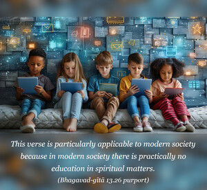

Again there are those who, although not conversant in spiritual knowledge, begin to worship the Supreme Person upon hearing about Him from others. Because of their tendency to hear from authorities, they also transcend the path of birth and death.

This verse is particularly applicable to modern society because in modern society there is practically no education in spiritual matters. Some of the people may appear to be atheistic or agnostic or philosophical, but actually there is no knowledge of philosophy. As for the common man, if he is a good soul, then there is a chance for advancement by hearing. This hearing process is very important. Lord Caitanya, who preached Kṛṣṇa consciousness in the modern world, gave great stress to hearing because if the common man simply hears from authoritative sources he can progress, especially, according to Lord Caitanya, if he hears the transcendental vibration Hare Kṛṣṇa, Hare Kṛṣṇa, Kṛṣṇa Kṛṣṇa, Hare Hare/ Hare Rāma, Hare Rāma, Rāma Rāma, Hare Hare. It is stated, therefore, that all men should take advantage of hearing from realized souls and gradually become able to understand everything. The worship of the Supreme Lord will then undoubtedly take place. Lord Caitanya has said that in this age no one needs to change his position, but one should give up the endeavor to understand the Absolute Truth by speculative reasoning. One should learn to become the servant of those who are in knowledge of the Supreme Lord. If one is fortunate enough to take shelter of a pure devotee, hear from him about self-realization and follow in his footsteps, one will be gradually elevated to the position of a pure devotee. In this verse particularly, the process of hearing is strongly recommended, and this is very appropriate. Although the common man is often not as capable as so-called philosophers, faithful hearing from an authoritative person will help one transcend this material existence and go back to Godhead, back to home.